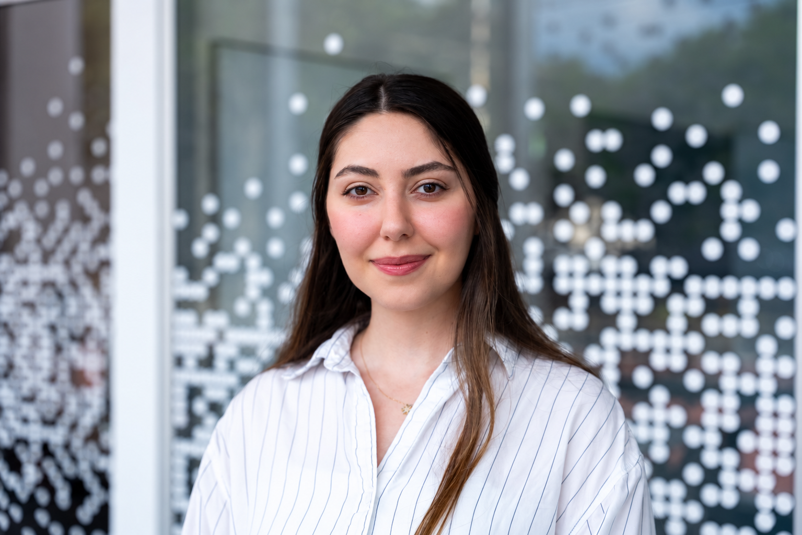

Sublinear & graph algorithms
Fast algorithms for massive graphs, including matching, correlation clustering, streaming, and dynamic computation.
THEORETICAL COMPUTER SCIENCE · ALGORITHMS · REASONING
I am a Ph.D. student at Northeastern University, advised by Soheil Behnezhad. My research spans sublinear and graph algorithms, local computation, lower bounds, dynamic algorithms, and theoretical models for test-time reasoning in large language models.

Research
Fast algorithms for massive graphs, including matching, correlation clustering, streaming, and dynamic computation.
Understanding what can be computed from a tiny view of an input—and proving when adaptivity or additional access is necessary.
Using Markov-chain models to study backtracking, rewinding, verifier-guided search, and test-time computation for language models.
Selected work
Author order is alphabetical. Publications prior to 2023 appear under M. Ghafari.
Amir Azarmehr, Soheil Behnezhad, Alma Ghafari, Madhu Sudan
A general framework for algorithms that may revisit previously observed states, with applications to sublinear lower bounds and algorithmic search.
Amir Azarmehr, Soheil Behnezhad, Alma Ghafari, Madhu Sudan
Amir Azarmehr, Soheil Behnezhad, Alma Ghafari, Ronitt Rubinfeld
Soheil Behnezhad, Moses Charikar, Vincent Cohen-Addad, Alma Ghafari, Weiyun Ma
Soheil Behnezhad, Alma Ghafari
Amir Azarmehr, Soheil Behnezhad, Alma Ghafari
Invited talks
Research talks, seminars, and workshops.
Talk with Soheil Behnezhad on constructive matching sparsifiers and the ideas behind our FOCS ’24 work.
Watch on YouTube ↗Soheil Behnezhad presents our joint framework with Amir Azarmehr and Madhu Sudan for systematic sublinear lower bounds.
Watch on YouTube ↗Algorithms Seminar · Google, Mountain View
RANDOM
MIT Algorithms & Complexity Seminar · Brown University Theory Seminar
Sublinear Graph Simplification Workshop · Simons Institute for the Theory of Computing
Old Questions and New Directions in the Theory of Clustering Workshop · UC San Diego
Background
A path through algorithms, geometry, optimization, and mathematical problem solving.
Research visits
UC Berkeley · Host: Soheil Behnezhad
Saarbrücken · Hosts: Joachim Spoerhase, Danupon Nanongkai
Klosterneuburg · Hosts: Morteza Saghafian, Herbert Edelsbrunner
Teaching
Teaching Assistant · Northeastern University
Teaching Assistant · Northeastern University
Instructor in combinatorics and number theory
Selected distinctions
Northeastern University
37th Iranian National Mathematical Olympiad
ICML 2026
Education
Ph.D. in Computer Science · 2023–present · anticipated May 2027
M.Sc. in Computer Science · 2023–2025
Earlier
B.Sc. in Computer Engineering · 2019–2023